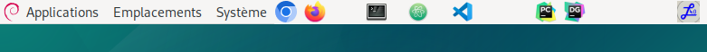
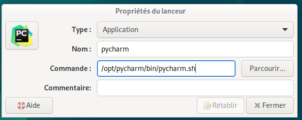
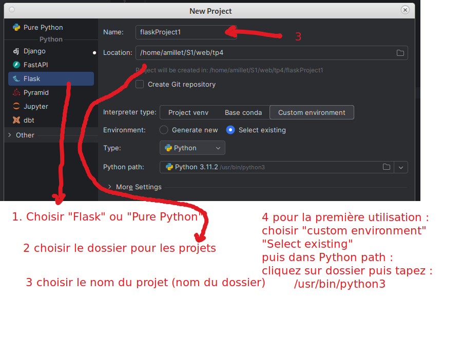
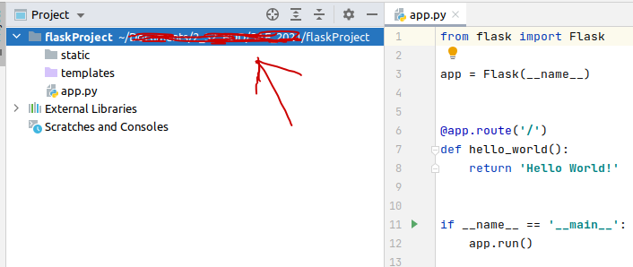
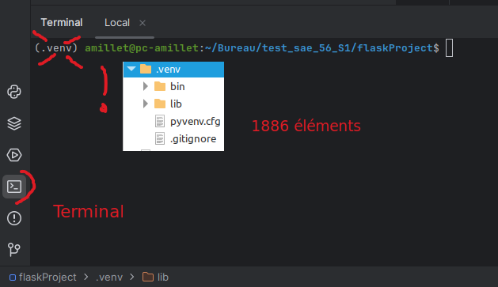
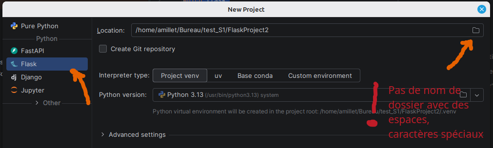
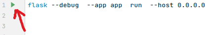
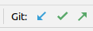

python est présentpython --version
python3 --version
pip --version
which python
which pip
ls -la /usr/bin/pyth*
# vérifier si les paquets sont installés
pip list
pip3 show pymysql
pip3 show flask
# installer les paquets dans votre $HOME
pip install flask --break-system-packages
pip install pymysql --break-system-packages
# les paquets sont installés à l'IUT /usr/local/lib/python3.11/dist-packages
# les paquets sont installés sur ~/.local/lib/pythonxxxxx sur vos machines linuxpython est :sudo apt install python3-pip
python --versionpython3 --version affiche une version,
mais pas la commande python --version, créer un lien
symbolique de python à python3sudo ln -s /usr/bin/python3 /usr/bin/python
recopier le script ci-dessous dans un terminal
#!/bin/bash
echo "" >> ~/.bashrc
echo "alias looping='wine /opt/looping-mcd/Looping.exe'" >> ~/.bashrc
echo "alias datagrip='/opt/datagrip/bin/datagrip.sh'" >> ~/.bashrc
echo "alias pycharm='/opt/pycharm/bin/pycharm.sh'" >> ~/.bashrc
echo "#!/usr/bin/env xdg-open" > "/home/$USER/Bureau/datagrip.desktop"
echo "[Desktop Entry]" >> "/home/$USER/Bureau/datagrip.desktop"
echo "Version=1.0" >> /home/$USER/Bureau/datagrip.desktop
echo "Type=Application" >> /home/$USER/Bureau/datagrip.desktop
echo "Terminal=false" >> /home/$USER/Bureau/datagrip.desktop
echo "Icon=/opt/DataGrip/bin/datagrip.png" >> /home/$USER/Bureau/datagrip.desktop
echo "Exec=/opt/DataGrip/bin/datagrip.sh" >> /home/$USER/Bureau/datagrip.desktop
echo "Name=datagrip" >> /home/$USER/Bureau/datagrip.desktop
echo "#!/usr/bin/env xdg-open" > "/home/$USER/Bureau/pycharm.desktop"
echo "[Desktop Entry]" >> "/home/$USER/Bureau/pycharm.desktop"
echo "Version=1.0" >> /home/$USER/Bureau/pycharm.desktop
echo "Type=Application" >> /home/$USER/Bureau/pycharm.desktop
echo "Terminal=false" >> /home/$USER/Bureau/pycharm.desktop
echo "Icon=/opt/pycharm/bin/pycharm.png" >> /home/$USER/Bureau/pycharm.desktop
echo "Exec=/opt/pycharm/bin/pycharm.sh" >> /home/$USER/Bureau/pycharm.desktop
echo "Name=pycharm" >> /home/$USER/Bureau/pycharm.desktop
echo "#!/usr/bin/env xdg-open" > "/home/$USER/Bureau/looping.desktop"
echo "[Desktop Entry]" >> "/home/$USER/Bureau/looping.desktop"
echo "Version=1.0" >> /home/$USER/Bureau/looping.desktop
echo "Type=Application" >> /home/$USER/Bureau/looping.desktop
echo "Terminal=false" >> /home/$USER/Bureau/looping.desktop
echo "Icon=/opt/looping-mcd/looping.png" >> /home/$USER/Bureau/looping.desktop
echo "Exec=wine /opt/looping-mcd/Looping.exe" >> /home/$USER/Bureau/looping.desktop
echo "Name=Looping" >> /home/$USER/Bureau/looping.desktop
Si le script ne fonctionne pas, recopiez le script dans un éditeur
texte (VsCode) et remplacez partout (Ctrl H) $USER par
votre login.
Utiliser PyCharm (à l’IUT
/opt/pycharm/bin/pycharm.sh et
licence server)


Créer une nouvelle application Flask (attention : l’explorateur de fichiers de pycharm a parfois du mal à scanner le contenu du dossier HOME monté en NFS)

Cette application se présente sous la forme suivante

static contient tous les éléments (contenus)
dits “static” du site : images, fichiers CSS,
fichiers javascript utilisés par les pages HTML ….)

python app.pyDepuis Debian 12/LMDE 6 (et donc aussi LMDE 7), pip refuse par défaut
d’installer des paquets globalement à cause de la norme PEP 668
(“externally-managed-environment”). C’est voulu : Debian gère lui-même
certains paquets Python système, et un pip install sauvage
en dehors d’un venv peut casser des outils du système.

flask --debug --app app run --host 0.0.0.0
which flask
deactivate
which flask
source .venv/bin/activate
which flaskCréer un fichier launcher.sh avec les droits d’exécution
: recopier le contenu ci-dessous dans un terminal de pycharm
touch launcher.sh
chmod a+x launcher.sh
echo "source .venv/bin/activate" > launcher.sh
echo "flask --debug --app app run --host 0.0.0.0" >> launcher.sh
echo "ouvrir le fichier launcher.sh et cliquer sur bouton gauche"
from flask import Flask, request, render_template, redirect, flash
app = Flask(__name__)
app.secret_key = 'une cle(token) : grain de sel(any random string)'
app.config["TEMPLATES_AUTO_RELOAD"] = True
@app.route('/')
@app.route('/hello')
def hello_world():
return 'Hello World!<a href="hello">lien hello</a>'
if __name__ == '__main__':
app.run(debug=True, port=5000)python app.pyCréer un fichier launcher.sh avec les droits d’exécution
: recopier le contenu ci-dessous dans un terminal de pycharm
touch launcher.sh
chmod a+x launcher.sh
echo "flask --debug --app app run --host 0.0.0.0" > launcher.sh
echo "ouvrir le fichier launcher.sh et cliquer sur bouton gauche"

Pour recharger automatiquement une application quand on modifie
une vue (template), ajouter la ligne ci-dessous dans votre code:
app.config["TEMPLATES_AUTO_RELOAD"] = True
( documentation - documentation)
Créer un fichier de nom launcher.bat par exemple avec
comme contenu :
python -m flask --debug --app app run --host 0.0.0.0message d’erreur : “Address already in use”
sur Linux : recherchez les numéros des processus qui utilisent le nom “flask” avec la commande ci-dessous :
ps aux | grep flaskpuis avec xxxx où xxxx est l’ID (première colonne du résultat de la commande précédente) du ou des processus flask à tuer (arrêter), faire
kill -9 xxxxautre solution : changez le port utilisé par le serveur web
flask --debug --app app run --host 0.0.0.0 --port 5002message d’erreur : “option –debug” non reconnue
flask --versionpip install --upgrade Flask# vérifier si les paquets sont installés
pip list
pip3 show pymysql
pip3 show flask
# installer les paquets dans votre $HOME
pip install flask --break-system-packages
pip install pymysql --break-system-packages
# les paquets sont installés sur à l'IUT /usr/local/lib/python3.11/dist-packages
# les paquets sont installés sur ~/.local/lib/pythonxxxxx sur vos machines linux
problème avec un paquet (11/2025)
pip install Flask-Assets2 --break-system-packages
Il est possible de désactiver l’affichage de conseils
d’incrustation : “File / Settings / Editor ; Inlay Hints ; disable Code
Vision”
Texte souligné en vert : Désactiver la typo : “File / Settings
/” “Inspection” ; Proofreading” ; Typo”
Dans un terminal :
git clone https://gitlab.com/username/nom_repository.git
cd nom_repository
Tester dans un terminal votre username avec
votre_clé
git config credential.helper store
# récupérer les modifications des autres dans le repository
git pull
# modifiez le contenu du repository
git add --all
git commit -m "modif projet"
git push
# commande pour revenir en arrière dans son code si on a oublié de faire un "pull" (dernière version avec un "commit")
git reset --hard HEAD^
# lister les "commits"
git log
Avec Pycharm : ouvrir un projet avec comme
dossier principal celui où se trouve le fichier app.py
(important)
Créer un fichier .gitignore avec comme contenu (ça
évitera de mettre sur le dépôt les fichiers ou dossiers
indésirables):
.idea
.gitignore
__pycache__
.git
.env
connexion_db.pyDans votre home, dans le fichier ~/.git-credentials,
vous trouverez le login et la clé

Documentation de dotenv
Commencer par installer le paquet :
pip install python-dotenvModifier un peu le début du fichier app.py
#! /usr/bin/python
# -*- coding:utf-8 -*-
from flask import Flask, request, render_template, redirect, flash
app = Flask(__name__)
app.secret_key = 'une cle(token) : grain de sel(any random string)'
from flask import session, g
import pymysql.cursors
import os # à ajouter
from dotenv import load_dotenv # à ajouter
load_dotenv() # à ajouter
def get_db():
if 'db' not in g:
g.db = pymysql.connect(
host=os.environ.get("HOST"), # à modifier
user=os.environ.get("LOGIN"), # à modifier
password=os.environ.get("PASSWORD"), # à modifier
database=os.environ.get("DATABASE"), # à modifier
charset='utf8mb4',
cursorclass=pymysql.cursors.DictCursor
)
return g.db
@app.teardown_appcontext
def teardown_db(exception):
db = g.pop('db', None)
if db is not None:
db.close()Créez un fichier .env à la racine du projet (au même
niveau que app.py)
HOST="localhost"
PASSWORD="secret"
LOGIN="login"
DATABASE="BDD_login"Sur pythonanywhere, remplacer :
load_dotenv()par 2 lignes comme celles ci-dessous (voir stackoverflow) :
project_folder = os.path.expanduser('~/sae_s2_2024') # adjust as appropriate (avec le dossier où se trouve le fichier .env et app.py)
load_dotenv(os.path.join(project_folder, '.env'))https://www.nicelydev.com/git